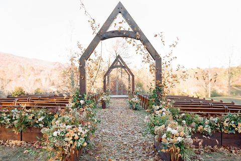

<body>
    <div class="flex items-center justify-center min-h-screen bg-local pl-4 pr-4 md:pl-64 md:pr-64">
      <div class="h-full max-w-xxl mt-12 px-9 pt-12 mb-12 ml-2 bg-white bg-opacity-50 rounded-3xl shadow-3xl font-quando">
      <div class="flex flex-col-reverse md:flex-row">
        <div>
          <h1 class="mb-4 text-2xl text-center text-black">
            OUR SERVICES  
          </h1>
          <h1 class="mb-4 text-2xl text-center text-black">
            LOCATION
          </h1>
          <div class="h-30 w-full md:pl-32 md:pr-32 md:block">
            
          </div> 
        <div class="flex flex-wrap text-md -mx-3 mb-4 mt-8 pl-4 pr-2 md:pl-24 md:pr-24"> 
            <q class="md:ml-52 ml-4 font-bold">We Make Your Event Memorable!</q> 
            <p class="p-2">Choosing the perfect wedding venue rather than selecting a beautiful location to host your wedding. Selecting the right wedding place is the most vital part of your wedding, as it is the foundation to your big day that adds beauty to your wedding photographs and the spot for all the memories. A perfect wedding location sets the tone of your wedding and that’s the reason we need to choose the wedding venue wisely. </p>
            <q class="md:ml-56 ml-12 font-bold">Where the Feast begins! </q>
            <p class="p-2">When planning for a wedding venue, there are lots and lots of things that need to be taken care of. Starting from the location, how well it is accessible to how many guests it can accommodate, decorations, food, size and a lot more.</p>
            <p class="p-2"> To plan your dream wedding, it’s advisable to have professional suggestions on the wedding venue, where you will get an idea about the wedding venue and how it can be executed. </p>
            <p class="p-2">At Wedding Feast Matrimony, we help you to choose the perfect wedding spot. Be it a small wedding ceremony or a fairy-tale wedding, choosing the best wedding venue spot is the most crucial part of a wedding and we are here to help you with the best wedding venue. The venues can be Traditional Marriage Halls, Banquet Halls, Resorts, Mandapam and Beaches. While choosing a perfect wedding venue we will analyse various metrics like location, weather, decoration, facilities, size of the hall and so on and help you to select the right wedding place for you. You enjoy your big day and leave the rest to us. Wedding Feast Matrimony ensures that we will meet your dream wedding expectations and will make your wedding a memorable and exclusive one. </p>
            <q class="md:ml-44 font-bold">Making Your Dream Wedding a Success </q>       
          </div>
        <p class="mb-8 mr-4 pb-8 float-right text-black" [routerLink]="['/contactus']">contact us ----></p>
      </div>
    </div>
    </div>
    </div> 
</body>
